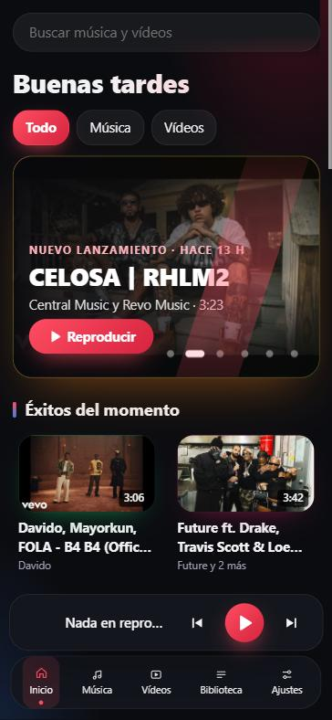
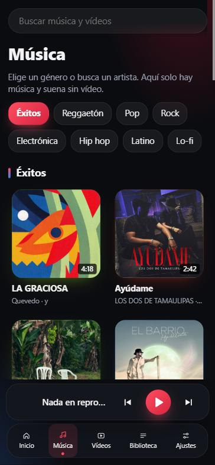
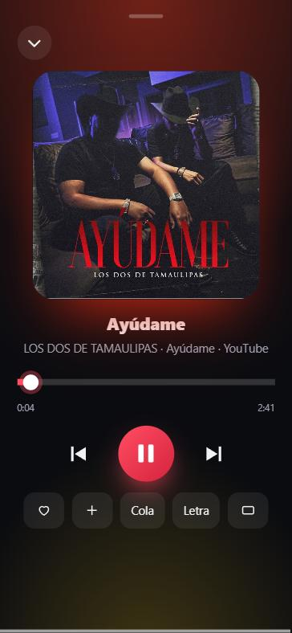

Nsound
Un reproductor personal de música y vídeo, gratuito y sin ánimo de lucro. Sin cuentas ni suscripciones: busca, guarda tus listas y escucha con letra sincronizada.
Proyecto personal y no comercial. Nsound no aloja ni distribuye música ni vídeos: reproduce con el reproductor oficial incrustado de YouTube y es para uso propio.
Beta. Nsound está en pruebas y puede tener fallos. Las apps de móvil aún no se han probado en dispositivos reales.
Las descargas de los instaladores estarán disponibles próximamente; mientras tanto aquí tienes cómo se instalará en cada sistema.
Qué hace
Búsqueda con YouTubeResultados dentro de la app, reproducidos con el reproductor oficial.
MúsicaSolo canciones de estudio, sin intros ni charla (YouTube Music).
VídeosEstanterías variadas: eventos, series y YouTubers. Solo vídeos.
Biblioteca y listasGuarda canciones y crea tus listas. Se quedan en tu dispositivo.
Importar listasUna canción, una lista pública o un artista desde YouTube, Spotify, SoundCloud, Deezer o Apple Music.
Letra sincronizadaCon LRCLIB, una base de datos abierta.
Ecualizador10 bandas y ajustes preestablecidos.
8 estilosNsound, Neón, Océano, Atardecer, Amoled, Claro, Clásico y Automático (claro u oscuro según tu móvil).
Cola de reproducciónMantén pulsada una canción para ponerla a continuación o al final. Reordena, quita o vacía.
Pantalla de bloqueoCarátula, artista y botones de anterior y siguiente, como un reproductor de música.
Seguir escuchandoLo último que sonó, en Inicio. Se guarda solo en tu dispositivo.
Así se ve



Cómo instalarlo
- Necesitas Windows 10 (1809) o superior.
- Descarga el
.zipde Nsound y extrae todo en una carpeta (clic derecho → Extraer todo). - Abre
Nsound.exe. - Si sale «Windows protegió su PC»: Más información → Ejecutar de todas formas. Es normal: la app no está firmada.
Para desinstalar, borra la carpeta. No necesita permisos de administrador.
- Necesitas Android 7 o superior.
- Descarga el
.apken el móvil y ábrelo. - Android pedirá permitir instalar desde esa fuente: acepta en Ajustes. Puedes quitar el permiso después.
- Si Play Protect avisa de «App no verificada»: Más detalles → Instalar de todas formas.
- Pulsa Instalar y luego Abrir.
El .ipa no está firmado, así que se firma con tu Apple ID al instalar. Lo más fácil es Sideloadly:
- Instala Sideloadly en tu ordenador (en Windows, con iTunes e iCloud descargados de Apple.com).
- Conecta el iPhone por cable y pulsa Confiar.
- Arrastra el
.ipaa Sideloadly, escribe tu Apple ID y pulsa Start. - En el iPhone: Ajustes → General → VPN y gestión de dispositivos → tu Apple ID → Confiar.
- Activa Ajustes → Privacidad y seguridad → Modo desarrollador y reinicia.
- Abre Nsound. Con un Apple ID gratuito la app caduca a los 7 días y hay que reinstalarla.
Cómo se usa
- Buscar: escribe arriba el nombre de una canción, un artista o un vídeo.
- Música y Vídeos: cada apartado muestra solo lo suyo. En Música salen solo canciones de estudio; en Vídeos, solo vídeos.
- Guardar: toca el corazón para guardar en tu biblioteca, o «+» para añadir a una lista.
- Cola: mantén pulsada una tarjeta (clic derecho en el ordenador) y elige «a continuación» o «al final». Ábrela con «Cola» en la pantalla Reproduciendo.
- Importar una lista: Biblioteca → Importar. Pega el enlace de una canción, una lista pública o un artista de YouTube, Spotify, Deezer, Apple Music o SoundCloud.
- Estilo: Ajustes → Aspecto. «Automático» sigue al modo claro u oscuro de tu móvil.
Si algo falla
No carga la búsqueda o salen resultados vacíos
Comprueba la conexión. YouTube puede limitar las peticiones durante unos minutos: espera y vuelve a probar.El botón Atrás de Android no cierra «Reproduciendo»
Actualiza a la última versión: ya cierra primero Reproduciendo, la cola y los menús.En el iPhone la app caduca a los 7 días
Es una limitación de Apple con los ID gratuitos. Hay que volver a instalarla con Sideloadly o AltStore (este último la renueva solo).Windows dice «protegió su PC»
Es normal: la app no está firmada. Pulsa «Más información» y luego «Ejecutar de todas formas».Una canción no se importa
Puede que no exista en YouTube Music con ese título. Al terminar, la app muestra la lista de canciones sin encontrar.Preguntas frecuentes
¿Se puede descargar música o vídeo de YouTube?
No. Nsound reproduce YouTube con su reproductor oficial y no extrae ni descarga contenido. Las descargas solo existen para contenido libre (Creative Commons).Sale «no se puede reproducir fuera de youtube.com»
Pasa cuando la página se abre desde una dirección sin HTTPS (por ejemplo una IP de tu red). En las apps instaladas no debería ocurrir.¿Qué se puede importar?
Solo una canción, una lista pública o un artista. No se accede a tu cuenta ni se copia audio: se leen títulos públicos y se buscan en YouTube. Puede fallar si el servicio cambia su página.¿Es de código libre?
El código es visible y se puede usar y modificar sin fines comerciales (licencia PolyForm Noncommercial). No se puede vender ni publicar copias comerciales, y el nombre y logo de Nsound son de la marca.Contacto y retirada
Si eres titular de derechos o de una marca y quieres que se retire o se corrija algo de este proyecto, abre una incidencia en GitHub indicando qué y dónde. Se atiende lo antes posible.